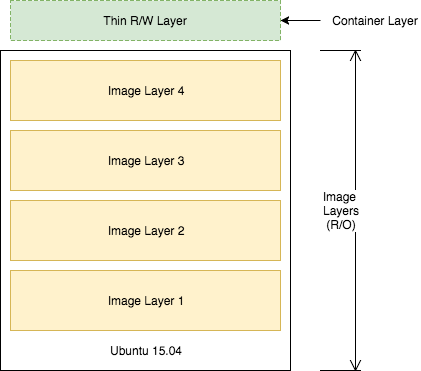

Lab 2- Adding Value with Custom Docker Images
Step 5: Deploying a Change
The "hello world!" application is overrated, let's update the app so that it says "hello beautiful world".
Update
app.pyUpdate the file with the following command. In the terminal for Mac OS or Linux, copy-paste the entire code block or edit the
app.py.echo 'from flask import Flask app = Flask(__name__) @app.route("/") def hello(): return "hello beautiful world!" if __name__ == "__main__": app.run(host="0.0.0.0")' > app.pyRebuild your image
Now that your app is updated, you need repeat the steps above to rebuild your app and push it to the Docker Hub registry.
docker image build -t $DOCKER_USER/python-hello-world:v2 . $ Sending build context to Docker daemon 3.072kB Step 1/4 : FROM python:3.6.1-alpine ---> c86415c03c37 Step 2/4 : RUN pip install flask ---> Using cache ---> ce41f2517c16 Step 3/4 : CMD python app.py ---> Using cache ---> 0ab91286958b Step 4/4 : COPY app.py /app.py ---> 3e08b2eeace1 Removing intermediate container 23a955e881fc Successfully built 3e08b2eeace1 Successfully tagged jzaccone/python-hello-world:latestNotice the "Using cache" for steps 1-3. These layers of the Docker Image have already been built and
docker image buildwill use these layers from the cache instead of rebuilding them.Test your image locally.
docker run -p 5000:5000 -d $DOCKER_USER/python-hello-world:v2 $ 0b2ba61df37fb4038d9ae5d145740c63c2c211ae2729fc27dc01b82b5aaafa26 curl http://localhost:5000 $ hello beatiful world!Finally re-push your image to Docker Hub
docker push $DOCKER_USER/python-hello-world:v2 $ The push refers to a repository [docker.io/jzaccone/python-hello-world] 94525867566e: Pushed 64d445ecbe93: Layer already exists 18b27eac38a1: Layer already exists 3f6f25cd8b1e: Layer already exists b7af9d602a0f: Layer already exists ed06208397d5: Layer already exists 5accac14015f: Layer already exists latest: digest: sha256:91874e88c14f217b4cab1dd5510da307bf7d9364bd39860c9cc8688573ab1a3a size: 1786There is a caching mechanism in place for pushing layers too. Docker Hub already has all but one of the layers from an earlier push, so it only pushes the one layer that has changed.
When you change a layer, every layer built on top of that will have to be rebuilt. Each line in a Dockerfile builds a new layer that is built on the layer created from the lines before it. This is why the order of the lines in our Dockerfile is important. We optimized our Dockerfile so that the layer that is most likely to change (
COPY app.py /app.py) is the last line of the Dockerfile. Generally for an application, your code changes at the most frequent rate. This optimization is particularly important for CI/CD processes, where you want your automation to run as fast as possible.
Step 6: Understanding Image Layers
One of the major design properties of Docker is its use of the union file system.
Consider the Dockerfile that we created before:
FROM python:3.6.1-alpine
RUN pip install flask
CMD ["python","app.py"]
COPY app.py /app.py
Each of these lines is a layer. Each layer contains only the delta, or changes from the layers before it. To put these layers together into a single running container, Docker makes use of the union file system to overlay layers transparently into a single view.
Each layer of the image is read-only, except for the very top layer which is created for the container. The read/write container layer implements "copy-on-write" which means that files that are stored in lower image layers are pulled up to the read/write container layer only when edits are being made to those files. Those changes are then stored in the container layer. The "copy-on-write" function is very fast, and in almost all cases, does not have a noticeable effect on performance. You can inspect which files have been pulled up to the container level with the docker diff command. More information about how to use docker diff can be found here .

Since image layers are read-only, they can be shared by images and by running containers. For instance, creating a new python app with its own Dockerfile with similar base layers, would share all the layers that it had in common with the first python app.
FROM python:3.6.1-alpine
RUN pip install flask
CMD ["python","app2.py"]
COPY app2.py /app2.py

You can also experience the sharing of layers when you start multiple containers from the same image. Since the containers use the same read-only layers, you can imagine that starting up containers is very fast and has a very low footprint on the host.
You may notice that there are duplicate lines in this Dockerfile and the Dockerfile you created earlier in this lab. Although this is a very trivial example, you can pull common lines of both Dockerfiles into a "base" Dockerfile, that you can then point to with each of your child Dockerfiles using the FROM command.
Image layering enables the docker caching mechanism for builds and pushes. For example, the output for your last docker push shows that some of the layers of your image already exists on the Docker Hub.
docker push $DOCKER_USER/python-hello-world
$ The push refers to a repository [docker.io/jzaccone/python-hello-world]
94525867566e: Pushed
64d445ecbe93: Layer already exists
18b27eac38a1: Layer already exists
3f6f25cd8b1e: Layer already exists
b7af9d602a0f: Layer already exists
ed06208397d5: Layer already exists
5accac14015f: Layer already exists
latest: digest: sha256:91874e88c14f217b4cab1dd5510da307bf7d9364bd39860c9cc8688573ab1a3a size: 1786
To look more closely at layers, you can use the docker image history command of the python image we created.
docker image history $DOCKER_USER/python-hello-world:v1
$ IMAGE CREATED CREATED BY SIZE COMMENT
f1b2781b3111 5 minutes ago /bin/sh -c #(nop) COPY file:0114358808a1bb... 159B
0ab91286958b 5 minutes ago /bin/sh -c #(nop) CMD ["python" "app.py"] 0B
ce41f2517c16 5 minutes ago /bin/sh -c pip install flask 10.6MB
c86415c03c37 8 days ago /bin/sh -c #(nop) CMD ["python3"] 0B
<missing> 8 days ago /bin/sh -c set -ex; apk add --no-cache -... 5.73MB
<missing> 8 days ago /bin/sh -c #(nop) ENV PYTHON_PIP_VERSION=... 0B
<missing> 8 days ago /bin/sh -c cd /usr/local/bin && ln -s idl... 32B
<missing> 8 days ago /bin/sh -c set -ex && apk add --no-cache ... 77.5MB
<missing> 8 days ago /bin/sh -c #(nop) ENV PYTHON_VERSION=3.6.1 0B
<missing> 8 days ago /bin/sh -c #(nop) ENV GPG_KEY=0D96DF4D411... 0B
<missing> 8 days ago /bin/sh -c apk add --no-cache ca-certificates 618kB
<missing> 8 days ago /bin/sh -c #(nop) ENV LANG=C.UTF-8 0B
<missing> 8 days ago /bin/sh -c #(nop) ENV PATH=/usr/local/bin... 0B
<missing> 9 days ago /bin/sh -c #(nop) CMD ["/bin/sh"] 0B
<missing> 9 days ago /bin/sh -c #(nop) ADD file:cf1b74f7af8abcf... 4.81MB
Each line represents a layer of the image. You'll notice that the top lines match to your Dockerfile that you created, and the lines below are pulled from the parent python image. Don't worry about the "\
Summary
In this lab, you started adding value by creating your own custom docker containers.
Key Takeaways:
- The Dockerfile is how you create reproducible builds for your application and how you integrate your application with Docker into the CI/CD pipeline
- Docker images can be made available to all of your environments through a central registry. The Docker Hub is one example of a registry, but you can deploy your own registry on servers you control.
- Docker images contain all the dependencies that it needs to run an application within the image. This is useful because we no longer have deal with environment drift (version differences) when we rely on dependencies that are install on every environment we deploy to.
- Docker makes use of the union file system and "copy on write" to reuse layers of images. This lowers the footprint of storing images and significantly increases the performance of starting containers.
- Image layers are cached by the Docker build and push system. No need to rebuild or repush image layers that are already present on the desired system.
- Each line in a Dockerfile creates a new layer, and because of the layer cache, the lines that change more frequently (e.g. adding source code to an image) should be listed near the bottom of the file.